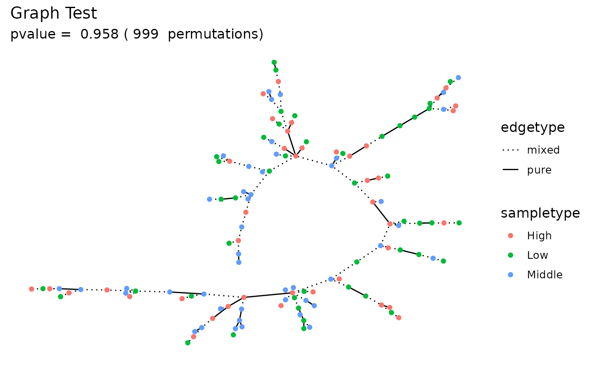
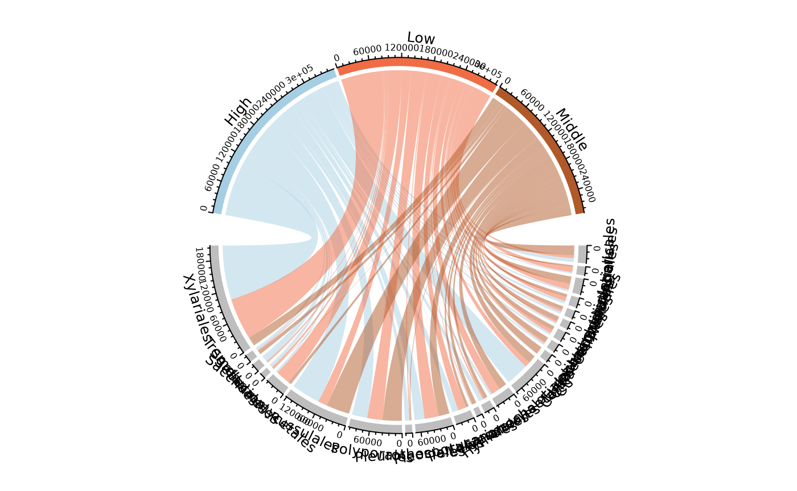
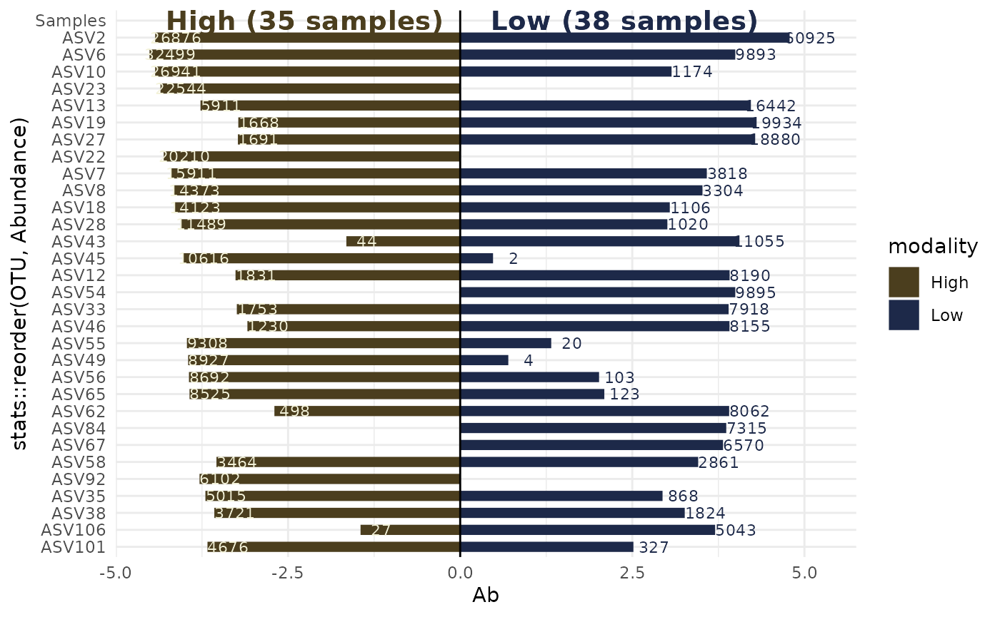
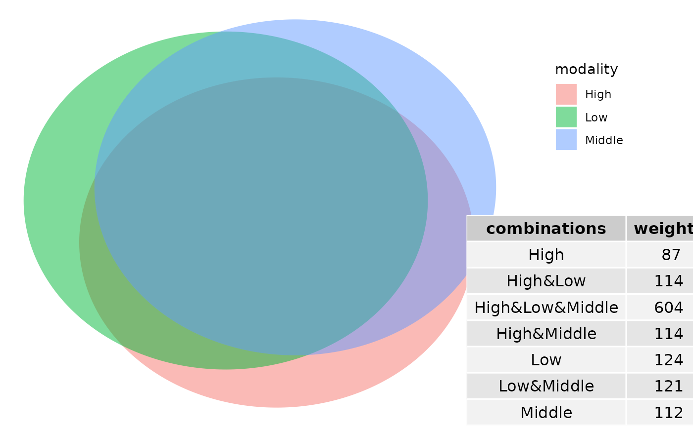
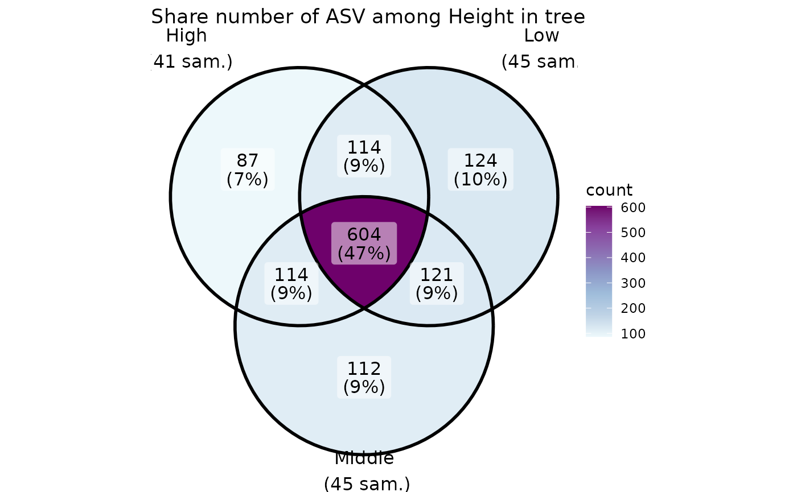
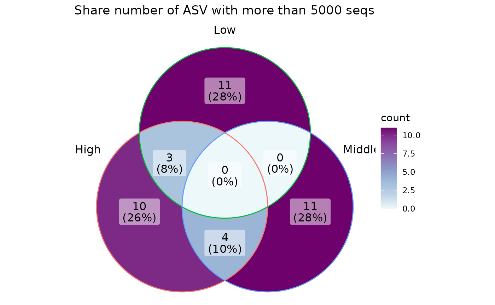
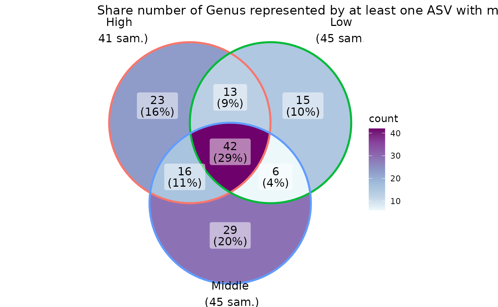

library(MiscMetabar)
data(data_fungi)Permanova
data_fungi_woNA4height <- subset_samples(data_fungi, !is.na(data_fungi@sam_data$Height))
res_ado <- adonis_pq(data_fungi_woNA4height, "Tree_name+Height")
knitr::kable(res_ado)| Df | SumOfSqs | R2 | F | Pr(>F) | |
|---|---|---|---|---|---|
| Tree_name | 61 | 36.0741288 | 0.5746127 | 1.532526 | 0.001 |
| Height | 2 | 0.8514605 | 0.0135626 | 1.103256 | 0.123 |
| Residual | 67 | 25.8543072 | 0.4118246 | NA | NA |
| Total | 130 | 62.7798964 | 1.0000000 | NA | NA |
Graph Test
data_fungi_woNA4height <- subset_samples(data_fungi, !is.na(data_fungi@sam_data$Height))
graph_test_pq(data_fungi_woNA4height, "Height")
Circle of ASVs
circle_pq(data_fungi_woNA4height, "Height")
#> Only 23 taxa are plot (32.39%). Use 'min_prop_tax' to plot more taxa
Compare two (group of) samples
Biplot
data_fungi_low_high <- subset_samples(data_fungi, data_fungi@sam_data$Height %in% c("Low", "High"))
data_fungi_low_high <- subset_taxa_pq(data_fungi_low_high, taxa_sums(data_fungi_low_high)>5000)
#> Cleaning suppress 0 taxa ( ) and 13 sample(s) ( BE9-006-B_S27_MERGED.fastq.gz / BG7-010-H_S31_MERGED.fastq.gz / D9-027-B_S83_MERGED.fastq.gz / DJ2-008-B_S87_MERGED.fastq.gz / DJ2-008-H_S88_MERGED.fastq.gz / DY5-004-H_S97_MERGED.fastq.gz / E9-009-B_S100_MERGED.fastq.gz / E9-009-H_S101_MERGED.fastq.gz / J18-004-B_S114_MERGED.fastq.gz / N22-001-B_S129_MERGED.fastq.gz / O20-X-B_S139_MERGED.fastq.gz / R28-008-H_S159_MERGED.fastq.gz / Y29-007-H_S182_MERGED.fastq.gz ).
#> Number of non-matching ASV 0
#> Number of matching ASV 1420
#> Number of filtered-out ASV 1389
#> Number of kept ASV 31
#> Number of kept samples 73
biplot_pq(data_fungi_low_high, fact = "Height", merge_sample_by = "Height")
#> Cleaning suppress 0 taxa and 0 samples.
#> Scale for y is already present.
#> Adding another scale for y, which will replace the existing scale.
#> Warning: Removed 1 rows containing missing values (`geom_rect()`).
Venn diagramm

ggvenn_pq(data_fungi, fact = "Height") +
ggplot2::scale_fill_distiller(palette = "BuPu", direction = 1) +
labs(title = "Share number of ASV among Height in tree")
ggvenn_pq(data_fungi, fact = "Height", min_nb_seq = 5000) +
ggplot2::scale_fill_distiller(palette = "BuPu", direction = 1) +
labs(title = "Share number of ASV with more than 5000 seqs")
ggvenn_pq(data_fungi, fact = "Height", taxonomic_rank = "Genus", min_nb_seq = 100) +
ggplot2::scale_fill_distiller(palette = "BuPu", direction = 1) +
labs(title = "Share number of Genus represented by at least one ASV with more than 100 seqs")
Change in abundance across a factor
Using Deseq2 package
data("GlobalPatterns")
GP <- subset_samples(GlobalPatterns, GlobalPatterns@sam_data$SampleType %in% c("Soil", "Skin"))
plot_deseq2_pq(GP, c("SampleType", "Soil", "Skin"), alpha = 0.001)
#> Conversion to Deseq2 format.
#> Loading required namespace: DESeq2
#> converting counts to integer mode
#> Calculation of Deseq2 results.
#> estimating size factors
#> estimating dispersions
#> gene-wise dispersion estimates
#> mean-dispersion relationship
#> final dispersion estimates
#> fitting model and testing